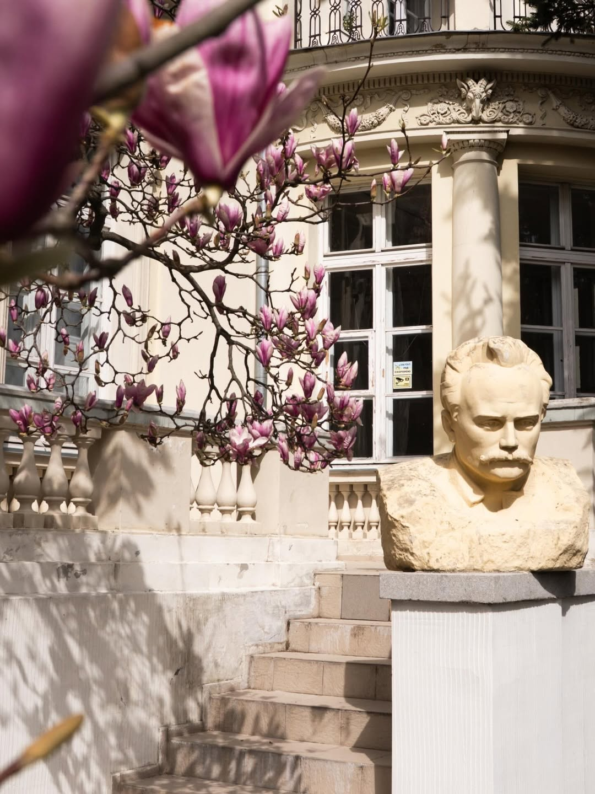
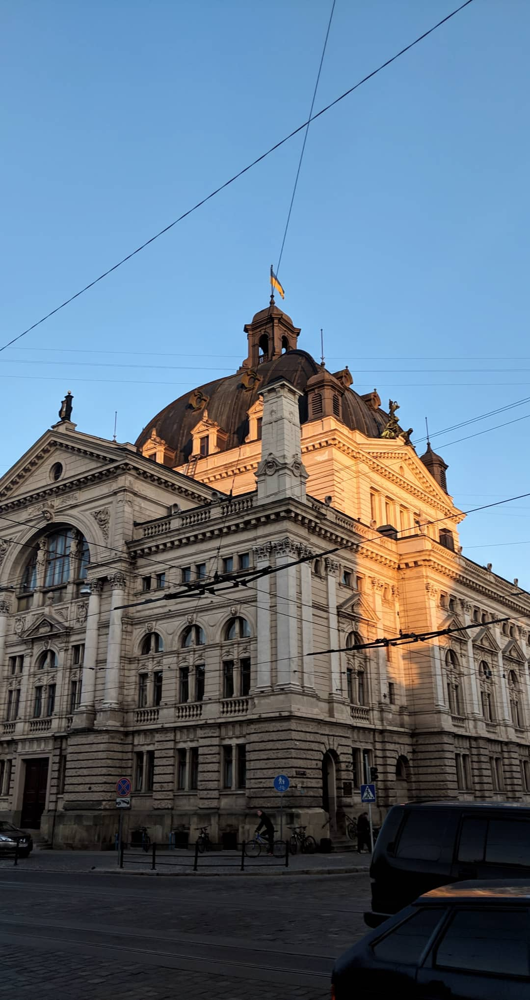

Архітектура
Дім Франка

Це місце, де розквітають магнолії та оживають слова, запрошуючи кожного в музей-садибу

Це місце, де розквітають магнолії та оживають слова, запрошуючи кожного в музей-садибу

Мальовничий живий музей просто неба, де можна побачити екзотичні рослини з усіх куточків планети та насолодитися прогулянкою серед природи.

Архітектурна перлина Львова, одна з найгарніших оперних будівель у Європі.